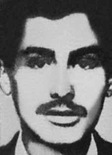

Hélcio
Pereira
Fortes
CIRCUNSTÂNCIAS DA MORTE
Preso em 22 de janeiro de 1972 por agentes do Destacamento de Operações de Informações – Centro de Operações de Defesa Interna (DOI-CODI) no Rio de Janeiro (RJ), Hélcio Pereira Fortes foi transferido para o DOI-CODI do II Exército, em São Paulo (SP), onde foi morto sob torturas.
Sua perseguição é comprovada por uma ficha do Centro de Informações da Marinha (Cenimar), que o identifica pelos codinomes “Nelson” e “Ernesto”, e faz a descrição de suas atividades. A versão oficial de sua morte, divulgada pela imprensa e presente na requisição de exame necroscópico ao Instituto Médico-Legal de São Paulo, afirmou que, “após travar violento tiroteio com os agentes dos órgãos de segurança, foi ferido e, em consequência, veio a falecer”.
O jornal Estado de Minas, de 1º de fevereiro de 1972, divulgou essa versão:
“Hélcio Pereira Fortes morreu sexta-feira em São Paulo, na avenida dos Bandeirantes ao tentar fugir, aproveitando-se de tiroteio entre agentes de segurança e outro terrorista com o qual Hélcio tinha um encontro marcado. No sábado anterior, dia 23 de janeiro, Hélcio Pereira Fortes […] conseguiu escapar à perseguição policial na Guanabara, quando tentou manter contato com uma terrorista na Tijuca. Fugindo para São Paulo, foi preso dia 26, na Estação Rodoviária por agentes de segurança da Guanabara e de S. Paulo, que acompanhavam seus passos desde o Rio.”
Em depoimento prestado à Comissão Nacional da Verdade em 12 de dezembro de 2013, Darci Toshiko Miyaki, colega de militância de Hélcio na ALN e sequestrada em 28 de janeiro no Rio de Janeiro, afirmou que ela e Hélcio foram levados juntos do Rio de Janeiro para São Paulo. “Logo que chegamos ao DOI-CODI de São Paulo, Hélcio e eu fomos levados para a sala de tortura. Cada um em uma sala. Nos intervalos da minha tortura, eu ouvia os gritos do Hélcio, por mais de dois dias […]. Eu ouvi o Hélcio sendo torturado […] Eu afirmo categoricamente: ele não morreu no dia 28 de janeiro. Provavelmente, ele morreu entre o dia 30 ou 31 de janeiro.”
Darci Miyaki chegou a ver e identificar Hélcio Pereira Fortes já na prisão. Ela afirmou que sempre foi torturada sozinha, mas quando havia algum intervalo em que “não estava levando choque ou qualquer coisa, ouvia gritos. E eram os gritos do Hélcio”. Enquanto estava no Rio de Janeiro, Darci foi obrigada a vestir um capuz cuja costura esgarçada ficou em sua frente, o que lhe permitiu ver Hélcio por um instante. Ela descreve que “ele estava encostado na parede. Eu o reconheci pela estrutura física dele e o terninho. […] Aí eles jogaram nós dois em uma viatura. O Hélcio foi jogado. Ele estava muito torturado. Eu via que ele não se aguentava”.
Quanto à versão oficial apresentada pela imprensa, Darci afirma que a notícia é a de que o tiroteio teria ocorrido em São Paulo, e que essa notícia foi dada enquanto estavam em trânsito da Guanabara para São Paulo. A família de Hélcio foi a São Paulo buscar seu corpo, quando foi declarado aos familiares que ele já tinha sido enterrado. Darci afirma que, enquanto isso, ele ainda estava vivo. “Estava ali! Quer dizer, a 20 metros de onde estava o irmão dele, o Hélcio estava sendo torturado!”. Ela conta ainda que, alguns dias depois, quando foi levada para a solitária, o carcereiro, Altair Casadei, lhe disse: “Daqui saiu um presunto fresquinho!”.
Ainda de acordo com Darci Miyaki, naquela época, somente ela e Hélcio estavam sendo torturados no local e, após esse dia, não ouviu mais os gritos de Hélcio. Ela indica que Hélcio “deve ter morrido dia 30 ou 31 de janeiro de 1972”. Documento elaborado pelo Comitê de Solidariedade aos Presos Políticos do Brasil em fevereiro de 1973, intitulado “Aos Bispos do Brasil”, indica outros depoimentos convergentes sobre o caso: Preso, não se sabe se no Rio ou em São Paulo, entre 22 e 26 de janeiro de 1972. Hélcio esteve enclausurado no DOI/SP sendo que inúmeros presos políticos atestam a sua presença naquele destacamento.
Submetido a dolorosas torturas pelas equipes policiais, Hélcio veio a sucumbir no dia 28 de janeiro. No dia 1º de fevereiro, os órgãos de repressão, através dos jornais, publicaram uma nota oficial onde informavam que Hélcio havia sido morto em tiroteio numa tentativa de fuga. Era por demais óbvio que ele não podia sequer caminhar, em decorrência das torturas. Seu corpo foi visto ao ser retirado do DOI.
Documento localizado no antigo DOPS/PR, Encaminhamento 087/72-CO/DR/PR, originado no Centro de Informações do Exército (CIE), descreve “depoimento de Hélcio Pereira Fortes, vulgo ‘Nelson’, ‘Fradinho’ e ‘Toninho’, morto em São Paulo ao tentar fugir da prisão.” Conforme noticiado pela Folha de S. Paulo em 4 de janeiro de 1972, Hélcio teria sido reconhecido pelos órgãos de segurança, identificado como “Alex”, “Ernesto” e “Nelson”.
De acordo com o laudo de exame de corpo de delito, de 11 de fevereiro de 1972, os médicos-legistas Isaac Abramovitc e Lenilso Tabosa Pessoa registraram como causa da morte de Hélcio “anemia aguda traumática”. No documento, os médicos-legistas descrevem: “segundo consta, trata-se de elemento terrorista que travou tiroteio com agente dos órgãos da Segurança e faleceu às dez horas de hoje (11/02/1972).” Documentos do DOPS deram conta do enterro do corpo no cemitério Dom Bosco, em Perus, São Paulo.
Alguns anos depois, em 1975, seus restos mortais foram trasladados para sua cidade natal, Ouro Preto (MG), onde foram enterrados na Igreja São José. A pedido da Comissão de Familiares de Mortos e Desaparecidos Políticos, foi produzida uma análise de laudo pelo legista Antenor Chicarino, que observou que o laudo da época não descreveu as características das lesões de cada projétil, somente definindo as lesões como entrada e saída, sem descrição da distância dos disparos. O laudo oficial descreveu apenas as trajetórias dos projéteis no exame externo, o que não foi feito em exame interno.
Arnaldo Chicarino indicou, ainda, que as lesões mencionadas não teriam sido imediatamente mortais. Mesmo estando localizados em tecidos de fácil acesso, os projéteis não foram removidos e considerados para inquérito. A análise do médico legista Dolmevil de França Guimarães Filho, que contribuiu na instrução de processos éticos perante o CREMESP (Conselho Regional de Medicina do Estado de São Paulo), indicou a possibilidade do primeiro projétil ter tido uma trajetória da esquerda para direita, de cima para baixo e de frente para trás, disparado a média ou curta distância, o que, de fato, é característica típica de execução. São evidentes, portanto, as contradições entre os elementos colhidos e a versão oficial de morte de Hélcio Pereira Fortes, encampada pelos relatórios dos ministérios militares, enviados ao ministro da Justiça em 1993.
Nesse sentido, o relatório do Ministério da Aeronáutica registrou: “faleceu no dia 28 de janeiro de 1972 ao dar entrada no hospital das Clínicas em São Paulo, após travar tiroteio com agentes de segurança que o perseguiam”; e o relatório da Marinha: “morto no dia 28 de janeiro de 1972 em tiroteio com agentes de segurança ao tentar fugir em um fusca após estabelecer contato com um companheiro”. Uma das versões se baseia em um tiroteio na avenida Bandeirantes, onde Hélcio, que não estaria preso, teria um encontro com outro militante. Já o outro relatório versa sobre uma suposta fuga da prisão, quando Hélcio teria sido baleado.
Diante das contradições evidenciadas pelos documentos e depoimentos, constata-se a farsa em relação à versão oficial de morte de Hélcio Pereira Fortes, que foi morto sob torturas ou executado após ser interrogado.
Arrested on January 22, 1972 by agents from the Information Operations Detachment – Internal Defense Operations Center (DOI-CODI) in Rio de Janeiro (RJ), Hélcio Pereira Fortes was transferred to the DOI-CODI of the II Army, in São Paulo (SP), where he was killed under torture.
His persecution is proven by a file from the Navy Information Center (Cenimar), which identifies him by the code names “Nelson” and “Ernesto”, and describes his activities. The official version of his death, published by the press and present in the request for a necroscopic examination from the São Paulo Medical-Legal Institute, stated that, “after engaging in a violent shootout with security agents, he was injured and, as a result, died”.
The newspaper Estado de Minas, on February 1, 1972, published this version:
"Hélcio Pereira Fortes died Friday in São Paulo, on Avenida dos Bandeirantes when he tried to escape, taking advantage of a shootout between security agents and another terrorist with whom Hélcio had a scheduled meeting. The previous Saturday, January 23rd, Hélcio Pereira Fortes [...] managed to escape the police chase in Guanabara, when he tried to maintain contact with a terrorist in Tijuca. Fleeing to São Paulo, he was arrested on the 26th, at the Bus Station for security agents from Guanabara and S. Paulo, who followed his steps from Rio.”
In a statement given to the National Truth Commission on December 12, 2013, Darci Toshiko Miyaki, a fellow activist of Hélcio in the ALN and kidnapped on January 28 in Rio de Janeiro, stated that she and Hélcio were taken together from Rio de Janeiro to São Paulo. "As soon as we arrived at DOI-CODI in São Paulo, Hélcio and I were taken to the torture room. Each one in a room. In between my torture, I heard Hélcio's screams, for more than two days [...]. I heard Hélcio being tortured [...] I categorically state: he did not die on January 28th. He probably died between January 30th or 31st."
Darci Miyaki even saw and identified Hélcio Pereira Fortes while in prison. She stated that she was always tortured alone, but when there was a break in which "I wasn't being shocked or anything, I heard screams. And it was Hélcio's screams." While in Rio de Janeiro, Darci was forced to wear a hood whose frayed seam was in front of her, which allowed her to see Hélcio for an instant. She describes that "he was leaning against the wall. I recognized him by his physical structure and his suit. [...] Then they threw the two of us into a police car. Hélcio was thrown. He was very tortured. I could see that he couldn't stand it."
As for the official version presented by the press, Darci states that the news is that the shooting had occurred in São Paulo, and that this news was given while they were in transit from Guanabara to São Paulo. Hélcio's family went to São Paulo to look for his body, when it was announced to his family that he had already been buried. Darci claims that, in the meantime, he was still alive. "It was there! I mean, 20 meters from where his brother was, Hélcio was being tortured!" She also says that, a few days later, when she was taken to solitary confinement, the prison guard, Altair Casadei, told her: “A fresh ham came out of here!”
Still according to Darci Miyaki, at that time, only she and Hélcio were being tortured there and, after that day, she no longer heard Hélcio's screams. It indicates that Hélcio “must have died on January 30 or 31, 1972”. A document prepared by the Brazilian Political Prisoners Solidarity Committee in February 1973, entitled “To the Bishops of Brazil”, indicates other converging testimonies about the case: Arrested, it is not known whether in Rio or São Paulo, between January 22 and 26, 1972. Hélcio was imprisoned in the DOI/SP and numerous political prisoners attest to his presence in that detachment.
Subjected to painful torture by police teams, Hélcio succumbed on January 28th. On February 1st, the repression bodies, through newspapers, published an official note stating that Hélcio had been killed in a shootout in an attempt to escape. It was very obvious that he could not even walk, due to the torture. His body was seen when it was removed from the DOI.
Document located in the former DOPS/PR, Routing 087/72-CO/DR/PR, originating at the Army Information Center (CIE), describes “a statement from Hélcio Pereira Fortes, aka ‘Nelson’, ‘Fradinho’ and ‘Toninho’, killed in São Paulo when trying to escape from prison.” As reported by Folha de S. Paulo on January 4, 1972, Hélcio was recognized by security agencies, identified as “Alex”, “Ernesto” and “Nelson”.
According to the forensic examination report dated February 11, 1972, coroners Isaac Abramovitc and Lenilso Tabosa Pessoa recorded “acute traumatic anemia” as the cause of Hélcio’s death. In the document, the coroners describe: “according to reports, this is a terrorist element who engaged in a shootout with an agent from the Security agencies and died at ten o'clock today (11/02/1972).” DOPS documents reported the burial of the body in the Dom Bosco cemetery, in Perus, São Paulo.
A few years later, in 1975, his remains were transferred to his hometown, Ouro Preto (MG), where they were buried in the São José Church. At the request of the Commission of Relatives of the Political Dead and Missing, a report analysis was produced by the coroner Antenor Chicarino, who noted that the report at the time did not describe the characteristics of the injuries from each projectile, only defining the injuries as entry and exit, without describing the distance from the shots. The official report only described the trajectories of the projectiles in the external examination, which was not done in the internal examination.
Arnaldo Chicarino also indicated that the injuries mentioned would not have been immediately fatal. Even though they were located in easily accessible tissue, the projectiles were not removed and considered for investigation. The analysis by coroner Dolmevil de França Guimarães Filho, who contributed to the instruction of ethical proceedings before CREMESP (Regional Council of Medicine of the State of São Paulo), indicated the possibility that the first projectile had a trajectory from left to right, from top to bottom and from front to back, fired at a medium or short distance, which, in fact, is a typical characteristic of execution. Therefore, the contradictions between the elements collected and the official version of Hélcio Pereira Fortes' death, supported by the reports of the military ministries, sent to the Minister of Justice in 1993, are evident.
In this sense, the report from the Ministry of Aeronautics recorded: “he died on January 28, 1972 when he was admitted to the Clínicas hospital in São Paulo, after engaging in a shootout with security agents who were chasing him”; and the Navy report: “killed on January 28, 1972 in a shootout with security agents while trying to escape in a Beetle after establishing contact with a companion.” One of the versions is based on a shootout on Avenida Bandeirantes, where Hélcio, who was not arrested, had an encounter with another militant. The other report deals with an alleged prison escape, when Hélcio was allegedly shot.
Given the contradictions evidenced by the documents and testimonies, the official version of Hélcio Pereira Fortes' death, who was killed under torture or executed after being interrogated, is a farce.
Detenido el 22 de enero de 1972 por agentes del Destacamento de Operaciones de Información – Centro de Operaciones de Defensa Interna (DOI-CODI) en Río de Janeiro (RJ), Hélcio Pereira Fortes fue trasladado al DOI-CODI del II Ejército, en São Paulo (SP), donde fue asesinado bajo tortura.
Su persecución queda acreditada por un expediente del Centro de Información de la Marina (Cenimar), que lo identifica con los nombres en clave “Nelson” y “Ernesto”, y describe sus actividades. La versión oficial de su muerte, publicada por la prensa y presente en la solicitud de examen necroscópico al Instituto Médico Legal de São Paulo, afirma que, “tras un violento tiroteo con agentes de seguridad, resultó herido y, como resultado, murió”.
El diario Estado de Minas, del 1 de febrero de 1972, publicó esta versión:
"Hélcio Pereira Fortes murió el viernes en São Paulo, en la Avenida dos Bandeirantes, cuando intentaba escapar, aprovechando un tiroteo entre agentes de seguridad y otro terrorista con el que Hélcio tenía una reunión programada. El sábado anterior, 23 de enero, Hélcio Pereira Fortes [...] logró escapar de la persecución policial en Guanabara, cuando intentaba mantener contacto con un terrorista en Tijuca. Huyendo a São Paulo, fue detenido el día 26, en la Estación de Autobuses de los agentes de seguridad de Guanabara y S. Paulo, que siguieron sus pasos desde Río”.
En declaración dada ante la Comisión Nacional de la Verdad el 12 de diciembre de 2013, Darci Toshiko Miyaki, compañera activista de Hélcio en la ALN y secuestrada el 28 de enero en Río de Janeiro, afirmó que ella y Hélcio fueron llevados juntos desde Río de Janeiro a São Paulo. "Tan pronto como llegamos al DOI-CODI en São Paulo, Hélcio y yo fuimos llevados a la sala de tortura. Cada uno en una habitación. Entre las torturas, escuché los gritos de Hélcio, durante más de dos días [...]. Escuché cómo torturaban a Hélcio [...]. Lo digo categóricamente: no murió el 28 de enero. Probablemente murió entre el 30 o 31 de enero."
Darci Miyaki incluso vio e identificó a Hélcio Pereira Fortes mientras estaba en prisión. Manifestó que siempre fue torturada sola, pero cuando hubo un descanso en el que "no estaba recibiendo descargas ni nada, escuché gritos. Y eran los gritos de Hélcio". Mientras estaba en Río de Janeiro, Darci fue obligada a usar una capucha cuya costura deshilachada estaba frente a ella, lo que le permitió ver a Hélcio por un instante. Ella describe que "estaba apoyado contra la pared. Lo reconocí por su estructura física y su traje. [...] Luego nos metieron a los dos en un patrullero. Hélcio fue arrojado. Lo torturaron mucho. Pude ver que no podía soportarlo".
En cuanto a la versión oficial presentada por la prensa, Darci afirma que la noticia es que el tiroteo ocurrió en São Paulo, y que esa noticia fue dada mientras se encontraban en tránsito de Guanabara a São Paulo. La familia de Hélcio fue a São Paulo a buscar su cuerpo, cuando le anunciaron a su familia que ya había sido enterrado. Darci afirma que, mientras tanto, todavía estaba vivo. "¡Estaba ahí! O sea, ¡a 20 metros de donde estaba su hermano, Hélcio estaba siendo torturado!" Cuenta también que, unos días después, cuando la llevaron a régimen de aislamiento, el guardia de la prisión, Altair Casadei, le dijo: “¡De aquí salió un jamón fresco!”.
Aún así, según Darci Miyaki, en ese momento sólo ella y Hélcio estaban siendo torturados allí y, después de ese día, ya no escuchó los gritos de Hélcio. Indica que Hélcio “debió fallecer el 30 o 31 de enero de 1972”. Un documento elaborado por el Comité de Solidaridad con los Presos Políticos Brasileños en febrero de 1973, titulado “A los obispos de Brasil”, indica otros testimonios convergentes sobre el caso: Detenido, no se sabe si en Río o en São Paulo, entre el 22 y el 26 de enero de 1972. Hélcio estuvo preso en el DOI/SP y numerosos presos políticos atestiguan su presencia en ese destacamento.
Sometido a dolorosas torturas por parte de equipos policiales, Hélcio sucumbió el 28 de enero. El 1 de febrero, los órganos de represión, a través de los periódicos, publicaron una nota oficial afirmando que Hélcio había sido asesinado en un tiroteo mientras intentaba escapar. Era muy obvio que ni siquiera podía caminar debido a la tortura. Su cuerpo fue visto cuando fue retirado del DOI.
Documento ubicado en el ex DOPS/PR, Ruta 087/72-CO/DR/PR, con origen en el Centro de Información del Ejército (CIE), describe “una declaración de Hélcio Pereira Fortes, alias ‘Nelson’, ‘Fradinho’ y ‘Toninho’, asesinado en São Paulo cuando intentaba escapar de prisión”. Según informó Folha de S. Paulo el 4 de enero de 1972, Hélcio fue reconocido por los organismos de seguridad, identificado como “Alex”, “Ernesto” y “Nelson”.
Según el informe del examen forense del 11 de febrero de 1972, los forenses Isaac Abramovitc y Lenilso Tabosa Pessoa registraron “anemia traumática aguda” como causa de la muerte de Hélcio. En el documento, los forenses describen: “según informes, se trata de un elemento terrorista que entabló un tiroteo con un agente de los organismos de Seguridad y falleció a las diez de la mañana de hoy (02/11/1972)”. Documentos del DOPS informaron sobre el entierro del cuerpo en el cementerio Dom Bosco, en Perus, São Paulo.
Unos años más tarde, en 1975, sus restos fueron trasladados a su ciudad natal, Ouro Preto (MG), donde fueron enterrados en la Iglesia de São José. A solicitud de la Comisión de Familiares de Muertos y Desaparecidos Políticos, el análisis del informe fue realizado por el médico forense Antenor Chicarino, quien señaló que el informe de su momento no describía las características de las heridas de cada proyectil, solo definía las heridas como entrada y salida, sin describir la distancia desde los disparos. El informe oficial sólo describió las trayectorias de los proyectiles en el examen externo, lo que no se hizo en el examen interno.
Arnaldo Chicarino también indicó que las heridas mencionadas no habrían sido fatales de inmediato. Aunque estaban ubicados en tejido de fácil acceso, los proyectiles no fueron retirados ni considerados para investigación. El análisis del médico forense Dolmevil de França Guimarães Filho, que contribuyó a la instrucción de procedimientos éticos ante el CREMESP (Consejo Regional de Medicina del Estado de São Paulo), indicó la posibilidad de que el primer proyectil tuviera una trayectoria de izquierda a derecha, de arriba a abajo y de adelante hacia atrás, disparado a media o corta distancia, lo que, de hecho, es una característica típica de ejecución. Por tanto, son evidentes las contradicciones entre los elementos recabados y la versión oficial sobre la muerte de Hélcio Pereira Fortes, sustentada en los informes de los ministerios militares, enviados al Ministro de Justicia en 1993.
En este sentido, el informe del Ministerio de Aeronáutica registró: “falleció el 28 de enero de 1972 cuando ingresaba en el hospital de Clínicas de São Paulo, luego de entablar un tiroteo con agentes de seguridad que lo perseguían”; y el informe de la Marina: “muerto el 28 de enero de 1972 en un tiroteo con agentes de seguridad mientras intentaba escapar en un Escarabajo tras establecer contacto con un acompañante”. Una de las versiones se basa en un tiroteo en la Avenida Bandeirantes, donde Hélcio, que no fue detenido, tuvo un encuentro con otro militante. El otro informe trata sobre una supuesta fuga de prisión, cuando Hélcio supuestamente recibió un disparo.
Dadas las contradicciones que evidencian los documentos y testimonios, la versión oficial sobre la muerte de Hélcio Pereira Fortes, asesinado bajo tortura o ejecutado tras ser interrogado, es una farsa.